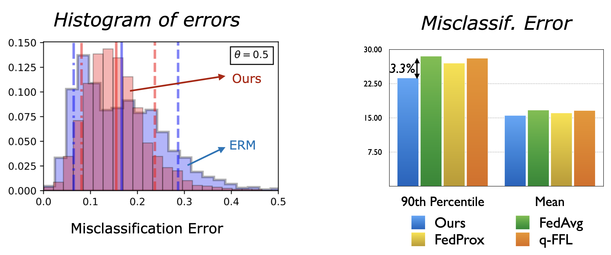
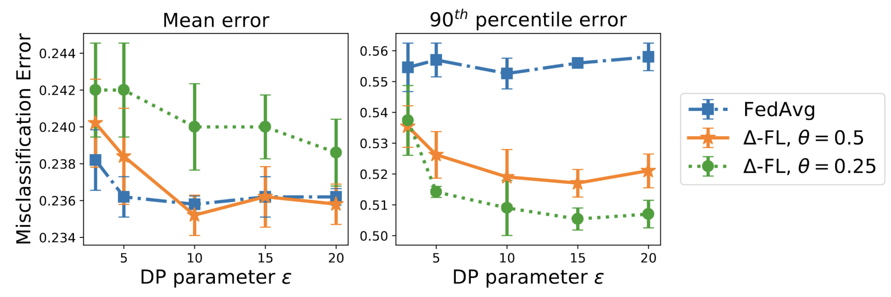

Federated Learning with Superquantile Aggregation for Heterogeneous Data¶
{kind=link}
We present a federated learning framework that is designed to robustly deliver good predictive performance across individual clients with heterogeneous data. The proposed approach hinges upon a superquantile/CVaR learning objective that captures the tail statistics of the error distribution over heterogeneous clients. We present a stochastic training algorithm that interleaves differentially private client filtering with federated averaging steps. We prove finite time convergence guarantees for the in the nonconvex case in T communication rounds and the strongly convex case. Experimental results on benchmark datasets for federated learning demonstrate that our approach is competitive with classical ones in terms of average error and outperforms them in terms of tail statistics of the error.
Empirical Results¶
We show results on the EMNIST dataset:
the left plot shows the misclassification errors
the right plot shows the mean and 90th percentile error of our approach compared to baselines.
These results show that our approach has a much better performance on the tail while being competitive on the average performance.
{kind=link}
The next plot shows that this conclusion is true across a wide range of differential privacy parameters.
{kind=link}
References (Bibtex)¶
[1] Pillutla, K., Laguel, Y., Malick J. and Harchaoui, Z., 2023. Federated learning with superquantile aggregation for heterogeneous data. Machine Learning, pp.1-68.
[2] Laguel, Y., Pillutla, K., Malick J. and Harchaoui, Z., 2021. A Superquantile Approach to Federated Learning with Heterogeneous Devices. In the 55th Annual Conference on Information Sciences and Systems (CISS) (pp. 1-6). IEEE.
Acknowledgments¶
This work has been partially supported by by NSF DMS 2023166, DMS 1839371, CCF 2019844, the CIFAR program “Learning in Machines and Brains”, faculty research awards, a JP Morgan Ph.D. fellowship, and MIAI – Grenoble Alpes (ANR-19-P3IA-0003). The work was mainly performed while Krishna Pillutla was at the University of Washington, and Yassine Laguel was at the Université Grenoble Alpes.